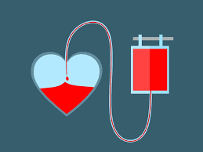

Por que receber a notificação?
Quando cadastradado no nosso sitema, você podera ajudar ainda mais pessoas que necessitam de ajuda!A notificação servirá como uma ponte para que você sempre possa doar nos momentos em que os hemonúcleos estiverem sem estoque.
Você também pode escolher ser notificado para ser alertado sempre que o prazo para doar novamente acabe, fazendo com que você tenha uma constante doação, mantendo sempre os estoques de sangue cheios para aqueles que precisem!

-
Ter idade entre 16 e 69 anos, (menores de 18 anos devem apresentar consentimento formal do responsável legal)
- Pessoas com idade entre 60 e 69 anos só poderão doar sangue se já o tiverem feito antes dos 60 anos
- Apresentar documento de identificação com foto emitido por órgão oficial (Carteira de Identidade, Carteira Nacional de Habilitação
, Carteira de Trabalho, Passaporte, Registro Nacional de Estrangeiro, Certificado de Reservista e Carteira Profissional emitida por classe)
São aceitos documentos digitais com foto
- Pesar no mínimo 50 kg
- Ter dormido pelo menos 6 horas nas últimas 24 horas
- Estar alimentado. Evitar alimentos gordurosos nas 3 horas que antecedem a doação de sangue. Caso seja após o almoço, aguardar 2 horas